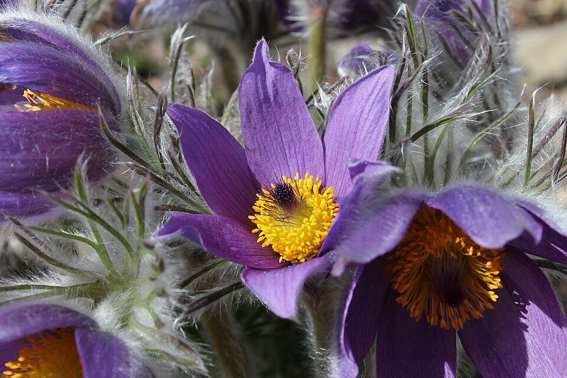

Pulsatilla: uso tradizionale, proprietà e avvertenze
Anemone pulsatilla (sinonimo Pulsatilla vulgaris)

Erba perenne dei prati aridi e dei terreni calcarei dell'Europa centrale e settentrionale, con fiori violetti a campana che compaiono in primavera. Da fresca è tossica: la fitoterapia usa solo la pianta secca.
Proprietà attribuite dalla tradizione
- Uso tradizionaleLe fonti di fitoterapia storica (Felter, Bone, Mills e Bone) attribuiscono alla pianta azione spasmolitica, analgesica, sedativa e antibatterica, e la usano per dolori e infiammazioni degli organi riproduttivi, sindrome premestruale, dismenorrea, insonnia, cefalee, nervosismo, tosse spasmodica e nevralgie (SCU, 2008).
- Evidenza preliminareIn vitro, un estratto alcolico ha ridotto le contrazioni spontanee del digiuno di coniglio, fino a bloccarle a dosi elevate. Il test non aveva un gruppo di controllo e non dice nulla sull'uso nell'uomo (Saify 1998, citato in SCU). Un altro studio, su cellule di intestino di ratto e con anemonina estratta da una specie asiatica affine (Pulsatilla chinensis), ha mostrato effetti antinfiammatori in laboratorio (Duan 2006, citato in SCU).
- Efficacia non dimostrataNon sono stati trovati studi clinici sulla Pulsatilla vulgaris (SCU, 2008). Anche per l'uso in allattamento, cioè per aumentare o ridurre il latte e per i capezzoli dolenti, non ci sono studi clinici validi (LactMed).
- Dato botanicoPrincipi attivi: ranunculina, che al contatto con l'acqua per azione di un enzima si trasforma in protoanemonina, irritante, poi in anemonina, più stabile; sono presenti anche saponine triterpeniche, tannini e olio volatile (SCU; LactMed). Si usano le parti aeree raccolte in primavera, durante la fioritura.
Uso tradizionale
Le dosi riportate dalle monografie tradizionali (non da studi clinici) per adulti sono di circa 0,4–0,9 g al giorno di parti aeree secche in infuso o decotto, oppure 0,4–1,5 ml al giorno di estratto liquido 1:2, o 3–10 ml a settimana. Sono dosi tradizionali e non verificate. In alcune fonti si parla di 0,12–0,3 g di erba secca tre volte al giorno. La pianta fresca non è indicata.
Avvertenze e controindicazioni
La pianta fresca è tossica: la protoanemonina irrita pelle, apparato gastrointestinale e mucose, e può irritare reni e vie urinarie se ingerita (SCU; LactMed). Sono state segnalate reazioni allergiche. Il secco è considerato non tossico (SCU), ma va usato solo su indicazione di un professionista qualificato. Non è raccomandata in gravidanza né in allattamento per mancanza di dati (SCU; LactMed). Usare con cautela nei bambini. Un uso prolungato insieme ad analgesici potenti non è raccomandato (SCU). Le preparazioni omeopatiche di pulsatilla, diffuse per i disturbi del ciclo e dell'allattamento, non hanno prove cliniche valide (LactMed).
Fonti
- Southern Cross University, Analytical Research Laboratory, Medicinal Plant Monographs: Anemone pulsatilla (monografia del 2008, consultata il 16 novembre 2026).
- LactMed, Pulsatilla, Drugs and Lactation Database, NCBI Bookshelf NBK500725 (aggiornamento 2025).
- Saify Z.S. et al., Assessment of Anemone pulsatilla for some biological activities, Pakistan J Pharm Sci 1998; 11(1):47-53 (citato in SCU).
- Duan H., Effect of anemonin on NO, ET-1 and ICAM-1 production in rat intestinal microvascular endothelial cells, J Ethnopharmacol 2006; 104(3):362-6 (citato in SCU).